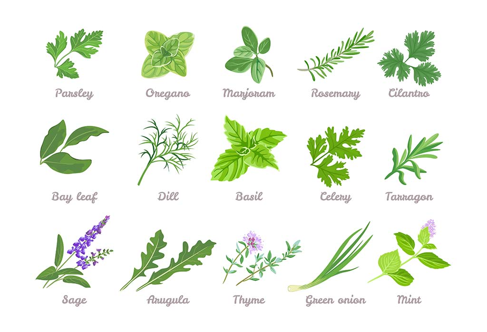
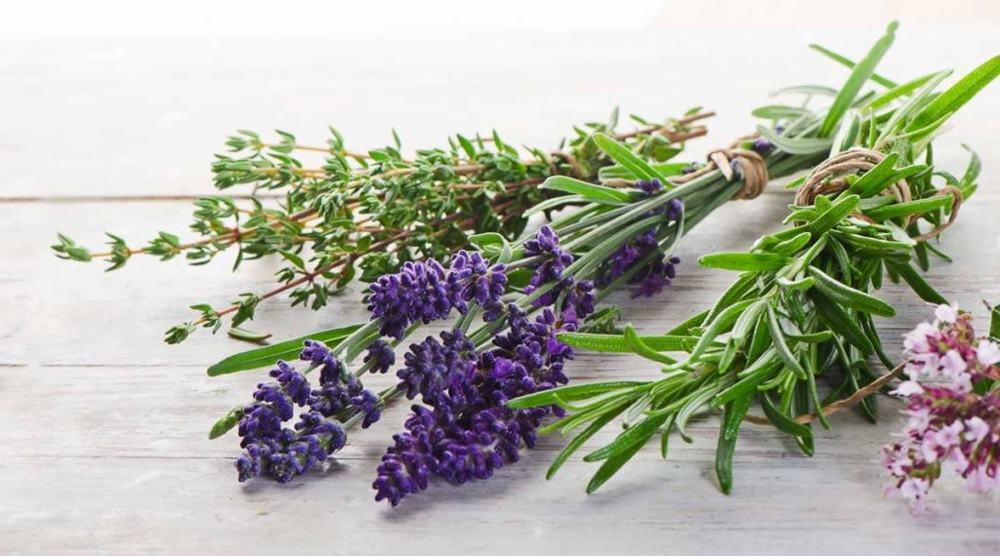

Ismerkedés a gyógynövényekkel!
A gyógynövények széleskörű hatást gyakorolnak az egészségünkre, és természetes módon támogathatják a testi és lelki jólétet. A legfontosabb hatások közé tartoznak a gyulladáscsökkentés, stresszoldás, emésztést segítés, antibakteriális és antioxidáns védelem, fájdalomcsillapítás, hormonális egyensúly fenntartás, valamint bőrápolás. Fontos megemlíteni, hogy bár a gyógynövények számos jótékony hatást kínálnak, használatuk előtt mindig érdemes konzultálni egy szakemberrel, különösen, ha gyógyszert szedünk vagy különleges egészségi állapotunk van.


| Gyógynövény | Hatás | Illat | Évszak | Gondozás | Felhasználás | Szín |
|---|---|---|---|---|---|---|
| Kamilla | Gyulladáscsökkentő, nyugtató | Enyhe, édes | Tavasz | Közepes vízigény, napos hely | Tea, krémek | Fehér |
| Levendula | Nyugtató, fertőtlenítő | Erős, aromás | Nyár | Szárazságtűrő, napos hely | Illóolaj, párnák | Lila |
| Citromfű | Stresszoldó, emésztést segítő | Friss, citromos | Tavasz-nyár | Vízigényes, félárnyékos hely | Tea, illóolaj | Zöld |
| Rozmaring | Serkentő, antibakteriális | Fanyar, fenyőszerű | Tavasz | Szárazságtűrő, napos hely | Fűszer, illóolaj | Sötétzöld |
| Zsálya | Fertőtlenítő, gyulladáscsökkentő | Földes, aromás | Nyár | Kevés víz, napos hely | Tea, öblögetés | Zöld-ezüstös |
| Borsmenta | Emésztést segítő, hűsítő | Intenzív mentolos | Nyár | Közepes vízigény, félárnyékos | Tea, olaj | Zöld |
| Körömvirág | Gyulladáscsökkentő, sebgyógyító | Enyhe, füves | Nyár | Könnyű gondozás, napos hely | Krémek, kenőcsök | Sárga-narancs |
| Cickafark | Gyulladáscsökkentő, görcsoldó | Enyhe, fűszeres | Nyár | Könnyű gondozás, napos hely | Tea, borogatás | Fehér |
| Orbáncfű | Hangulatjavító, sebgyógyító | Földes | Nyár | Közepes vízigény, napos hely | Olaj, tea | Sárga |
| Kakukkfű | Fertőtlenítő, köhögéscsillapító | Erős, fűszeres | Tavasz-nyár | Szárazságtűrő, napos hely | Tea, fűszer | Zöld |
| Citromverbéna | Nyugtató, emésztést segítő | Erősen citromos | Nyár | Vízigényes, napos hely | Tea | Zöld |
| Ánizs | Emésztést segítő, köhögéscsillapító | Édes, ánizsos | Nyár | Közepes vízigény, napos hely | Tea, fűszer | Fehér |
| Kamilla | Gyulladáscsökkentő, nyugtató | Enyhe, édes | Tavasz | Közepes vízigény, napos hely | Tea, krémek | Fehér |
| Levendula | Nyugtató, fertőtlenítő | Erős, aromás | Nyár | Szárazságtűrő, napos hely | Illóolaj, párnák | Lila |
| Citromfű | Stresszoldó, emésztést segítő | Friss, citromos | Tavasz-nyár | Vízigényes, félárnyékos hely | Tea, illóolaj | Zöld |
| Rozmaring | Serkentő, antibakteriális | Fanyar, fenyőszerű | Tavasz | Szárazságtűrő, napos hely | Fűszer, illóolaj | Sötétzöld |
| Zsálya | Fertőtlenítő, gyulladáscsökkentő | Földes, aromás | Nyár | Kevés víz, napos hely | Tea, öblögetés | Zöld-ezüstös |
| Borsmenta | Emésztést segítő, hűsítő | Intenzív mentolos | Nyár | Közepes vízigény, félárnyékos | Tea, olaj | Zöld |
| Körömvirág | Gyulladáscsökkentő, sebgyógyító | Enyhe, füves | Nyár | Könnyű gondozás, napos hely | Krémek, kenőcsök | Sárga-narancs |
| Cickafark | Gyulladáscsökkentő, görcsoldó | Enyhe, fűszeres | Nyár | Könnyű gondozás, napos hely | Tea, borogatás | Fehér |
| Orbáncfű | Hangulatjavító, sebgyógyító | Földes | Nyár | Közepes vízigény, napos hely | Olaj, tea | Sárga |
| Kakukkfű | Fertőtlenítő, köhögéscsillapító | Erős, fűszeres | Tavasz-nyár | Szárazságtűrő, napos hely | Tea, fűszer | Zöld |
| Citromverbéna | Nyugtató, emésztést segítő | Erősen citromos | Nyár | Vízigényes, napos hely | Tea | Zöld |
| Ánizs | Emésztést segítő, köhögéscsillapító | Édes, ánizsos | Nyár | Közepes vízigény, napos hely | Tea, fűszer | Fehér |